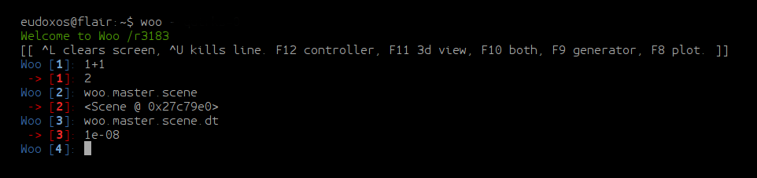
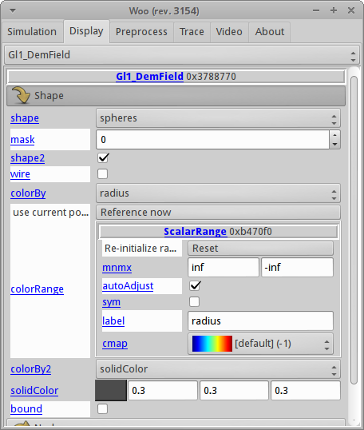
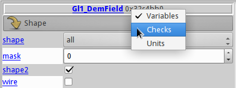
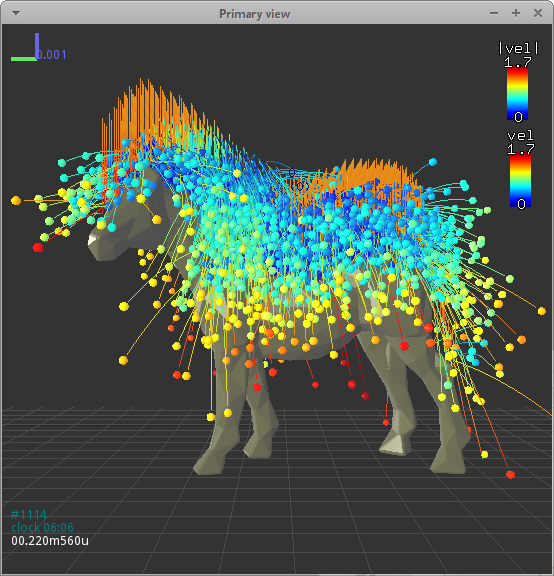
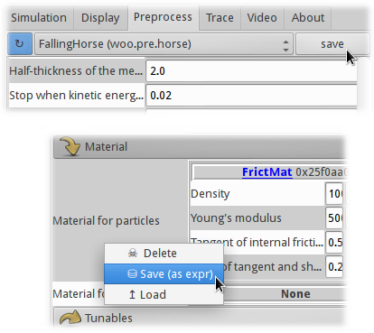

Running Woo¶
Command-line options¶
Woo is primarily a computation program, with only optional graphical user-interface. To run woo, type woo in the terminal (use wwoo under Windows). A number of options can be specified, given using UNIX convention of --long-option or -s (short option). A help on all available options is obtained with woo -h:
usage: woo [-h] [--version] [-j THREADS] [--cores CORES] [--cl-dev CLDEV] [-n]
[-D] [--quirks QUIRKS] [--flavor FLAVOR] [-c COMMANDS] [-e EXPR]
[--paused] [--nice NICE] [-x] [-v] [-R] [--test] [--no-gdb]
[--in-gdb] [--in-pdb] [--in-valgrind]
Options important for everyday use are the following ones:
-j THREADSNumber of CPU cores to use for computation. Woo is parallelized using OpenMP, and runs on all cores by default. Depending on hardware and the nature of simulation, reasonable value is usually around -j4. Woo must have been compiled with the
openmpfeature for this option to have any effect.-eEvaluate given expression (should yield a
Sceneor aPreprocessor)-nRun without graphical interface.
-xEnd once the simulation (or script) finishes.
--pausedWhen loading a simulation from the command line (below), don’t have it run immediately.
-RRecompile Woo before running. Useful during development when sources are modified.
-RRUpdate sources from the repository, recompile and run.
Woo takes an additional argument (existing file) coming after options. It can be
*.py: python script which will be interpreted by Woo.Saved simulation (in any supported format), which will be loaded and run by Woo.
Preprocessor, which will be run to create a new simulation, which will be run by Woo.
Once Woo starts, it shows an embedded command-prompt based on IPython. It can be used as general-purpose python console and to inspect and modify simulations:
To get started with scripting Woo, you should get familiar with Python, for instance using Python tutorial.
Import as python module¶
Woo can be used in python scripts. You only have to say import woo and everything should just work. Parameters which cannot be changed once woo is imported can be set via the wooMain.options object:
import wooMain
wooMain.options.ompThreads=4
wooMain.options.debug=True
import woo # initializes OpenMP to 4 threads, and uses the debug build of woo
Graphical interface¶
Graphical interface is entirely optional in Woo, simulations can run without it (with the -n switch, when no $DISPLAY is available, in batch, or if compiled without the qt4 feature).
Controller¶
The main Woo window, called controller, is brought up automatically at startup if a simulation/script is given on the command-line (under Windows, the controller is always shown at startup). The controller can be manually brought up by pressing F12 in the terminal, or by typing woo.qt.Controller(). The window (when the first, Simulation tab, is active) looks like this:
It is divided in several blocks –
Time display (simulation time, clock time, step number, timestep)
Loading/saving simulation, file where the simulation was last saved
- Running controls:
start/stop
advance by one timestep (or multiple steps, or substep)
reload from last saved file
- Display controls (toggle)
3d (OpenGL) window
2d plot window
Inspector
Area for simulation-specific controls, if defined (
woo.core.Scene.uiBuild)
The interface can display structured objects – for example, unde we see something like this:
Blue object/attribute labels are always active:
left-click opens online documentation for that particular class/attribute.
middle-click will copy path to that object to the clipboard, which can be then pasted into python.
each attribute has tooltip showing full documentation for that attribute; just hover over the label.
For the object, attributes can be displayed either as variable names, or as their documentation, units can be enabled/disabled, and per-attribute checkboxes can be added for easy input-checking (when all values must be set):
3d rendering¶
Note
The 3d rendering part of Woo is described in detail in Integrated 3d view.
The 3d view is opened by clicking the “3D” button in the D part of the controller. It is navigated with mouse similar to other 3d software, and supports many keyboard shortcuts. It can be used to make movies by taking snapshots. Detailed settings are accessible in the Display tab of the controller. Details are given in dedicated section Integrated 3d view.
Preprocessor¶
Preprocessors can be set and run from the Preprocess tab, which can be opened directly from the terminal with F9 (Linux-only).
In the top selection, all available preprocessors are listed. Preprocessor can be modified, loaded and saved. Once you have set all parameters, the play button bottom right will create new simulation and switch to the Simulation tab automatically.
Unit specifications are only representation. Technically is Woo unit-agnostic, practically, SI units are used everywhere. See woo._units for details.
The preprocessor can be saved for later use; it is saved, by default, as python expression. which is human-readable and easily editable:
##woo-expression##
#: import woo.pre.horse,woo.dem
woo.pre.horse.FallingHorse(
radius=0.002,
relGap=0.25,
halfThick=0.002,
relEkStop=0.02,
damping=0.2,
gravity=(0.0, 0.0, -9.81),
pattern='hexa',
mat=woo.dem.FrictMat(density=1000.0, id=-1, young=50000.0, tanPhi=0.5463024898437905, ktDivKn=0.2),
meshMat=None,
pWaveSafety=0.7,
reportFmt='/tmp/{tid}.xhtml',
vtkStep=40,
vtkPrefix='/tmp/{tid}-'
)
Saving and loading things¶
Save¶
Simulation, or any piece of it, can be saved and loaded from/to file or memory buffer. For instance, a preprocessor object above might be saved in various ways:
horse=woo.pre.horse.FallingHorse()
horse.damping=0.4
horse.saveTmp() # save to the default memory buffer
horse.saveTmp('something') # save to a named memory buffer
horse.dump('/tmp/somefile.json') # save to file, guess format (JSON) to use from filename
horse.dump('/tmp/somefile.expr.gz') # save to file, guess format (gzipped python expression) from filename
horse.dump('/tmp/somefile',format='json') # save to file, using the json format
dumpString=horse.dumps(format='expr') # dump to a string variable
Objects can also be saved (and loaded) from the graphical user interface:
Load¶
Loading is more involved due to type hierarchy; after loading, the object is checked to be instance of whichever class’ method was called. File format is detected automatically when loading.
horse=woo.core.Object.load('/tmp/somefile.xml') # FallingHorse is an Object, this is OK
horse=woo.pre.horse.FallingHorse.load('/tmp/somefile.xml') # FallingHorse is a FallingHorse, this is OK
horse=woo.dem.FrictMat.load('/tmp/somefile.xml') # FallingHorse is not a FrictMat, raises exception
horse=woo.core.Object.loads(dumpString) # load from string variable
horse=woo.core.Object.loadTmp() # load from the default memory buffer
horse=woo.core.Object.loadTmp('something') # load from a named memory buffer
Formats¶
There is a number of format Woo can save into and load from.
- Complete formats
are computer-readable formats designed to store as much useful information as possible, so that saved object can be loaded into identical state. They are rather efficient in terms of saving/loading speed.
Their principal limitation is that they are not compatible between different versions (or even builds) of Woo, since they rely on memory layout being identical.
Another limitation is that the c++/python boundary is not handled: python object deriving from a c++ object will only be saved as instance of the leaf class in c++; we attempt to detect this condition, but it should not be relied on.
- Dump formats
store only some amount of information. Most of them are human-readable and human-modifiable, most of them are also computer-readable, but without the claim of reconstructing the entire object. They should be used form small objects (such as preprocessors, materials and so on), being less efficient than complete formats.
They are not guaranteed to be compatible between versions either, but they do remain compatible as long as the same attributes of a particular object are defined. They are also safe to use with c++ objects extended in python.
Note
File extension is only important when saving an object and format is not specified – auto-detection will be attempted based on file extension.
Extension is disregarded when loading an object, the format is always detected from the actual contents of the file.
The following table summarizes available formats:
Format |
Type |
Extension |
Description |
|---|---|---|---|
binary |
complete |
-, |
Boost::serialization memory dump. This
is the most efficient format in terms of
speed. Compressed with gzip (by appending This is the default format for saving entire simulations. |
expr |
dump |
|
Text which is a valid python expression (with some special comments) evaluating to given object. It is extremely human-readable and human-writeable, thus recommended for small objects (preprocessors, in particular). This is the default format for small objects, such as preprocessors. Since special comments may contain any python commands, DO NOT load files unless you know what they contain (malicious user could e.g. instruct your computer to delete all files in your home directory). |
XML |
complete |
|
Boost::serialization dump written as XML.
To some extent human-readable; efficient for
speed, inefficient for storage. Best compressed
with bzip2 (append Some builds may not support saving to XML, depending on compilation options. |
JSON |
dump |
|
JavaScript Object Notation serves
for excellent inter-language compatibility;
this format is human- and
computer-readable and writeable, but its
syntax is limited. Use this format to load
objects in Matlab, JavaScript and similar.
Can store other objects than just
instances of |
pickle |
dump |
|
Serialization format used extensively in the python world. It is only used internally by Woo, for some data stored in SQLite database, for instance. Unlike most other formats, it can store
other objects than those deriving from
|
HTML |
dump |
|
Dump object to HTML table; this format is used when reports of simulation are generated (see e.g. Report). This format is write-only. It is the only format showing preferred unit for each quantity. |
Format examples¶
To get a taste what those files look like, here are fragments of them.
Binary represented as hex dump:
00000000 16 00 00 00 00 00 00 00 73 65 72 69 61 6c 69 7a |........serializ|
00000010 61 74 69 6f 6e 3a 3a 61 72 63 68 69 76 65 09 00 |ation::archive..|
00000020 04 08 04 08 01 00 00 00 00 01 00 00 00 02 00 05 |................|
00000030 00 00 00 00 00 00 00 53 63 65 6e 65 01 00 00 00 |.......Scene....|
00000040 00 00 00 00 00 01 00 00 00 00 01 00 00 00 3a 8c |..............:.|
00000050 30 e2 8e 79 45 3e 00 00 00 00 00 00 00 00 00 ff |0..yE>..........|
00000060 ff ff ff 00 00 00 00 00 00 00 00 00 00 00 00 00 |................|
00000070 00 00 00 00 00 00 00 00 00 00 ff ff ff ff ff ff |................|
00000080 ff ff 00 00 00 00 00 00 00 00 00 00 00 00 00 00 |................|
00000090 00 00 f0 bf 00 00 00 00 00 00 f0 bf 00 00 00 00 |................|
000000a0 00 00 f0 bf 00 00 00 00 00 00 f0 3f 00 00 00 00 |...........?....|
000000b0 00 00 f0 3f 00 00 00 00 00 00 f0 3f 01 00 00 00 |...?.......?....|
000000c0 00 00 06 00 00 00 00 00 00 00 00 00 00 00 00 00 |................|
000000d0 00 00 00 02 00 00 00 00 00 00 00 69 64 14 00 00 |...........id...|
000000e0 00 00 00 00 00 32 30 31 33 30 32 31 31 54 31 32 |.....20130211T12|
000000f0 32 30 30 31 70 39 34 32 38 03 00 00 00 00 00 00 |2001p9428.......|
00000100 00 69 64 74 14 00 00 00 00 00 00 00 32 30 31 33 |.idt........2013|
00000110 30 32 31 31 54 31 32 32 30 30 31 70 39 34 32 38 |0211T122001p9428|
00000120 07 00 00 00 00 00 00 00 69 73 6f 54 69 6d 65 0f |........isoTime.|
00000130 00 00 00 00 00 00 00 32 30 31 33 30 32 31 31 54 |.......20130211T|
00000140 31 32 32 30 30 31 03 00 00 00 00 00 00 00 74 69 |122001........ti|
00000150 64 14 00 00 00 00 00 00 00 32 30 31 33 30 32 31 |d........2013021|
00000160 31 54 31 32 32 30 30 31 70 39 34 32 38 05 00 00 |1T122001p9428...|
00000170 00 00 00 00 00 74 69 74 6c 65 00 00 00 00 00 00 |.....title......|
00000180 00 00 04 00 00 00 00 00 00 00 75 73 65 72 0d 00 |..........user..|
00000190 00 00 00 00 00 00 65 75 64 6f 78 6f 73 40 66 6c |......eudoxos@fl|
000001a0 61 69 72 00 00 00 00 00 00 00 00 00 00 00 00 00 |air.............|
XML includes attribute names and all data are stored in ASCII:
<?xml version="1.0" encoding="UTF-8" standalone="yes" ?>
<!DOCTYPE boost_serialization>
<boost_serialization signature="serialization::archive" version="9">
<woo__Object class_id="0" tracking_level="0" version="1">
<px class_id="2" class_name="Scene" tracking_level="1" version="0" object_id="_0">
<Object class_id="1" tracking_level="1" version="0" object_id="_1"></Object>
<dt>1e-08</dt>
<step>0</step>
<subStepping>0</subStepping>
<subStep>-1</subStep>
<time>0</time>
<stopAtStep>0</stopAtStep>
<isPeriodic>0</isPeriodic>
<trackEnergy>0</trackEnergy>
<clDev class_id="3" tracking_level="0" version="0">
<x>-1</x>
<y>-1</y>
</clDev>
<boxHint class_id="4" tracking_level="0" version="0">
<min class_id="5" tracking_level="0" version="0">
<x>-1</x>
<y>-1</y>
<z>-1</z>
</min>
<max>
<x>1</x>
<y>1</y>
<z>1</z>
</max>
</boxHint>
…
JSON is rather readable, but also quite verbose (note the special __class__ items, which are added so that reconstructing Woo objects is possible):
{
"__class__": "woo.pre.horse.FallingHorse",
"damping": 0.2,
"gravity": [
0.0,
0.0,
-9.81
],
"halfThick": 0.002,
"mat": {
"__class__": "woo.dem.FrictMat",
"density": 1000.0,
"id": -1,
"ktDivKn": 0.2,
"tanPhi": 0.5463024898437905,
"young": 50000.0
},
"meshMat": null,
"pWaveSafety": 0.7,
"pattern": "hexa",
"radius": 0.002,
"relEkStop": 0.02,
"relGap": 0.25,
"reportFmt": "/tmp/{tid}.xhtml",
"vtkPrefix": "/tmp/{tid}-",
"vtkStep": 40
}
Python expression format is trivial to read, modify and write by human; indentation is not important, the #: sequence introduces commands which will be executed before evaluating the expression (usually import statements):
##woo-expression##
#: import woo.pre.horse,woo.dem
woo.pre.horse.FallingHorse(
radius=0.002,
relGap=0.25,
halfThick=0.002,
relEkStop=0.02,
damping=0.2,
gravity=(0.0, 0.0, -9.81),
pattern='hexa',
mat=woo.dem.FrictMat(density=1000.0, id=-1, young=50000.0, tanPhi=0.5463024898437905, ktDivKn=0.2),
meshMat=None,
pWaveSafety=0.7,
reportFmt='/tmp/{tid}.xhtml',
vtkStep=40,
vtkPrefix='/tmp/{tid}-'
)
Python’s pickle format (the ASCII-based one):
cwoo.pre.horse
FallingHorse
p0
(tRp1
(dp2
S'mat'
p3
cwoo.dem
FrictMat
p4
(tRp5
(dp6
S'id'
p7
I-1
sS'ktDivKn'
p8
F0.2
sS'tanPhi'
p9
F0.5463024898437905
…
HTML dump is a XHTML-fragment (optionally with head and body tags as shown here):
<head>
<meta http-equiv="content-type" content="text/html;charset=UTF-8" />
</head>
<body>
<table cellpadding="2px" rules="all" frame="box">
<th colspan="3" align="left"><b>pre.horse.FallingHorse</b></th>
<tr>
<td colspan="3"><i>▸ General</i></td>
</tr>
<tr>
<td>radius</td>
<td align="right">2</td>
<td align="right">mm</td>
</tr>
<tr>
<td>relGap</td>
<td align="right">0.25</td>
<td align="right">−</td>
</tr>
<tr>
<td>halfThick</td>
<td align="right">2</td>
<td align="right">mm</td>
</tr>
<tr>
<td>relEkStop</td>
<td align="right">0.02</td>
<td align="right">−</td>
</tr>
…
Tip
Report issues or inclarities to github.